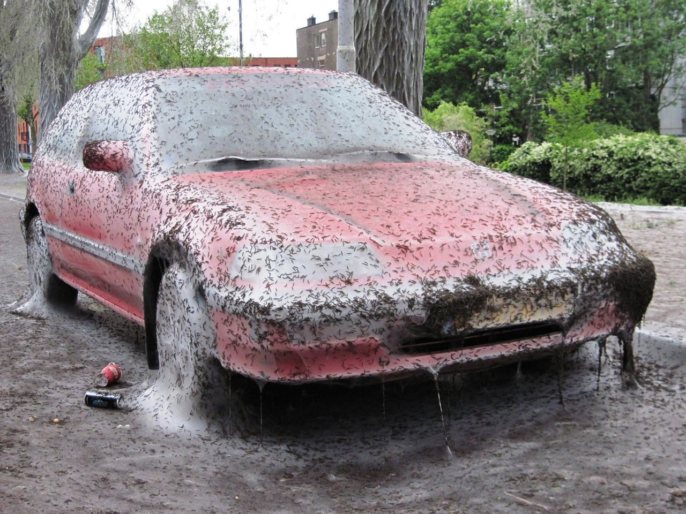

Driving the Web
If you had to describe the differences between HTML and CSS using an analogy, what would it be?
Well, think about Cars... yes, cars.
Think about everything that makes a car, a car. The wheels, the motor, the steering wheel, the chassis, the electrics. All of this makes a car serve a function, being able to drive and move. This is the HTML version of a car.
Think about all the things the car would still function without - panels, glass, mirrors, fancy interiors. All of these make the car better, but ultimately it would still be a car without those pieces. This is definitely CSS, HTML can still serve data without all these fancy styles and positioning; it's still a website! Without CSS though, it's pretty bland, pretty ugly and not very easy on the eyes.
A little bonus piece - think about the new comforts and engineering that makes cars much better than their predecessors. We've got Navigation, CarPlay, Bluetooth, ABS, Cruise Control etc, etc - These extra little bits while certainly aiding in making the styling and the functional aspects better, don't make the car - a car; this is Javascript.
What about control flow and loops? Can you give an example from everyday life?
Well, simplified - control flow would be the order that something happens. Your morning routine for example.
It's morning, your alarm goes off. Whether or not you know it; you probably have some form of routine, whether you're like me and you hit that snooze button till you can't hit it any more, or if you get straight up and do a task. This could be going to the bathroom, making a coffee, jumping in the shower.
Whatever it might be - this is flow control. Your alarm is the trigger for something to happen, and you go and do the next thing; next.
But what about loops? Well, your alarm goes off every work day doesn't it? That's a loop. Your alarm goes off, triggers a loop, and then you get straight into your flow control - doing something after a trigger.
What is the DOM? How might you interact with it?
Well, the DOM sounds pretty epic. It's real name is the Document Object Model, doesn't sound as good as the 'DOM' huh?
The DOM is essential to serving a page and interacting with things on that page. A real high level overview, would be that the DOM breaks up every thing inside a webpage and would be represented best by a tree.
It starts off with a seed, then grows into sprout, then grows a bit bigger and sprouts branches, then leaves, then grows bigger! Then more branches, more leaves. A website isn't much different - you start with a simple html file with some code, then add a css file with some code, then you might add images, videos, javascript, frameworks, databases, cookies, and much more! It just grows and grows.
If you were to draw a line from the base of the trunk of the tree, to the next thing you add, then lines from that thing to the things you've created inside that previous thing, and then the things in that thing, and so forth! OK, that sounds confusing calling everthing things, but i think this image makes it clearer.

Interacting with the DOM isn't too difficult - the way the DOM organises things allows to search it for a specific thing.
Browsers have this feature called developer tools, which lets you inspect a webpages code and files. It shows you how many files were involved in serving you the page, it can provide you with metrics such as load times, you can view all the tracking information of cookies and session tracking information, and much much more.
You can also make changes to a website, in the console of the developer tools by communicating with the DOM. Basically, once you tell the DOM what you want to find by traversing it, what you want to change, and what the thing you want to change needs to be - it applies your command and updates accordingly.
What's the difference between some data types though? Specifically Arrays and Objects?
If you had a grocery list for the supermarket, and you had it written out so the first thing on your list might be milk, the next thing bread, the next thing eggs, and so forth.
You'd have this represented in a list, most likely called 'groceries'. This ordered list of one thing, then another thing, then another thing all relating to the same place would represent an array.
An array can have sub lists, E.G. I want X,Y,Z things from the Deli, but i want A, B, C things from the bakery and keep them broken up in sections.
An object however, is a little different. If you didn't have just a grocery list, and you had a shopping list where you were going to multiple places - you could store this in an object-like fashion.
You might call the first list in your object 'groceries', and the next 'hardware', and the next 'electrionics' etc.. You've got a list for each shop you need to go to. You could have a page for each place you needed to go to, and each page would have what you needed from that store on it, which is all sitting in a master 'shopping' notebook.
You check this notebook for the contents of where you need to go, and dive deeper into what you need to get when you need it.
Functions? Why are they useful?
Functions are extremely useful for doing a task. If I were to refer back to my first example of your wake up routine, it would go something like:
function alarmRing (workday) {
if (workday === true) {
- turnAlarmOff
- makeCoffee
- shower
- getDressed
- eatBreakfast
- goToWork
} else {
- turnAlarmOff
- goBackToSleep
}};
Ok, ok. The syntax is a bit off, of course. It's a high level example after all!
That's how a function works, and why it's useful. It can have a bunch of things inside it that you want to happen if a condition is met, so we checked if it was a workday or not and decided whether or not we'd be getting up or going back to sleep!
Functions can get pretty mathematical, which I won't get into but you can create functions that loop and loop and loop until the condition is finally met. These conditions are entirely up to you to decide what gets evaluated; it can evaluate from another function, it can evaluate from you giving it a value of running 3 times, it can run every time a person clicks something.
So that pretty much sums it up, a very high level overview of how some of these things that you interact with everyday (maybe without realising), fundamentally relate to other things you use day to day. Not so bad, is it?